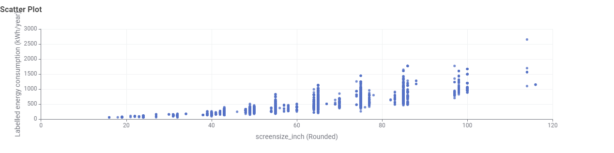
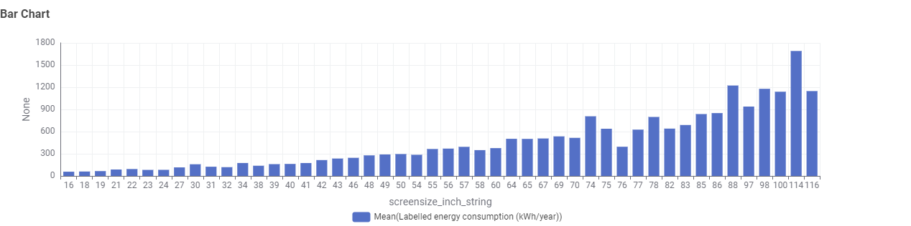
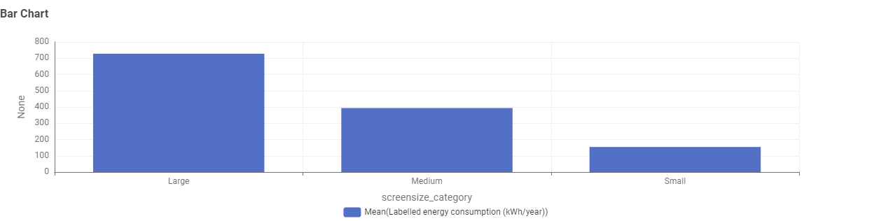
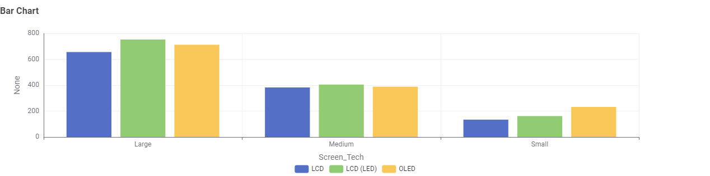

Throughout the year, more and more people are aware about TV Energy Consumption as comsumers start to interest in energy efficient televisions, policy makers and regulators interested in energy consumption trends while researchers study about energy efficient in consumer electronics such as televisions.
Prepare three data visualisation about energy efficient televisions, energy consumption trends and energy efficient in consumer electronics for these three types of audiences.
In this storyboard, charts need to be displayed for the audiences to let them have better understanding about the issue they have hence Knime will be used for the production of these charts.
Scatter plot (Relationship of screensize with labelled energy consumption (kWh/year))

Bar chart 1 (The average labelled energy consumption (kWh/year) for each screensize)

Bar chart 2 (The average labelled energy consumption (kWh/year) on different screensize category)

Bar chart 3 (How screen tech and screensize category influence the labelled energy consumption (kWh/year))

Scatterplot: Televisions with larger screensize usually has higher labelled energy consumption (kWh/year) and from the dataset majority of the television are in medium screensize.
Bar Chart 1:
Bar Chart 2:
Bar Chart 3: